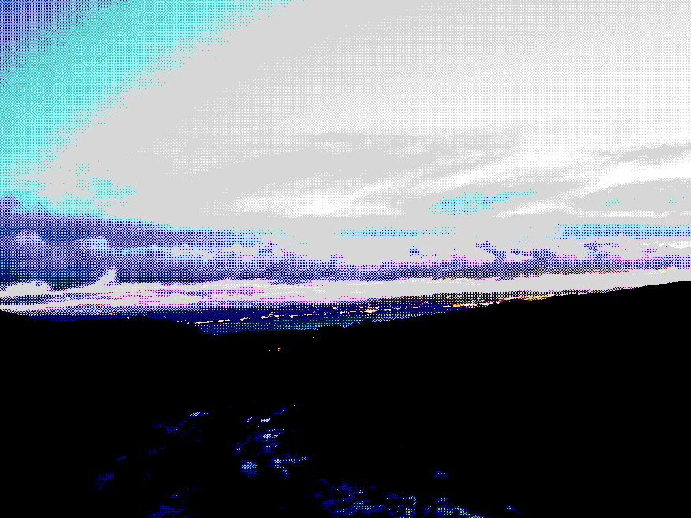

Home
About Me
Hello friends...I am a PhD candidate under the supervision of Dr. Daniela Korčákova in the Astronomical Institute of Charles University, Prague. I'm interested in the B[e] phenomenon, or in other words, hot (B-type) stars with regions of turbulent and chaotic circumstellar matter, and I am at the moment working on radiative transfer models of their dusty environments with the code HDUST. I completed my master's degree in astrophysics at the University of Galway under the supervision of Dr. Christian Ginski in 2025, in which I was examining circumstellar matter for an entirely different reason - probing the development of early planetary systems!
An Introduction to this Website in All Its Disguises
If you are interested in the fruits of my labour so far, GO NOW to the research/publications section on this very website! Outside of my academic pursuits I also have included some other aspects of my life and interests - the section with the working title of 'Cool Corner' is where I'm going to turf other vaguely interesting stuff for astronomers and non-astronomers alike to check out :)

A picture taken from nearby my home in Donegal, Ireland. Within the constraints of my choice of website aesthetic, you can see the city of Derry across the Lough Foyle.